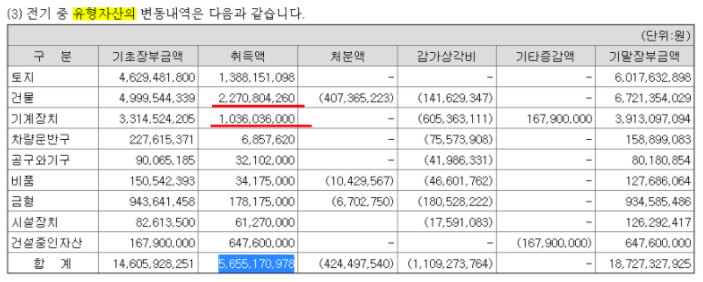
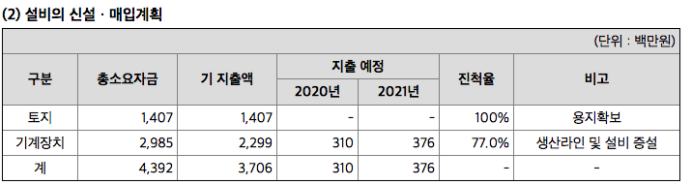
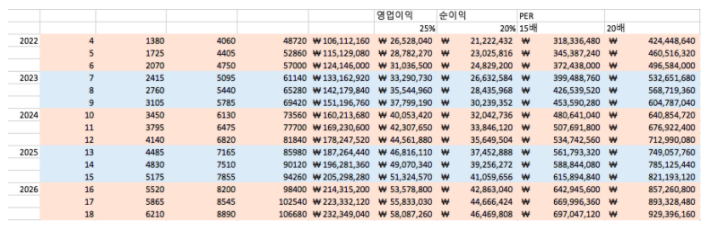

동사는 국내시장점유율 1위의 정수기필터 생산업체이다. 필터에 있어 안전성검사는 필수적이며 동사는 이미 각국으로부터 안전적합성을 취득하는데 노하우를 가지고 있다.
당사는 오랜 업력과 40%가 넘는 시장점유율로 현재 규모의 경제를 시현하고 있으며 필터전문업체로서 경쟁사인 '웅진코웨이'보다 경쟁력을 지닌다.
동사는 전방 렌탈산업의 해외시장 성장으로 동사 또한 매년 꾸준히 성장하고 있다. YoY 매출액은 28%, 영업이익은 53%, 당기순이익은 46%씩 성장하고 있다.
*향후 주가를 희석할 수 있는 CB나 BW 또한 존재하지 않는다.
나. 미상환 전환사채 발행현황
당사는 공시서류 작성기준일 현재 해당사항이 없습니다.
다. 미상환 신주인수권부사채 등 발행현황
당사는 공시서류 작성기준일 현재 해당사항이 없습니다.
라. 미상환 전환형 조건부자본증권 발행현황
당사는 공시서류 작성기준일 현재 해당사항이 없습니다.
동사는 영업활동현금흐름이 60억원으로 작년반기 대비 50%가 증가하였다. 동사는 자동화설비를 위하여 영업으로 벌어들인 현금을 다시 재투자하고 있는데 이는 생산증대를 위한 것으로 향후 매출은 더 증대될 것으로 예상된다.
영업활동현금흐름은 2015년 21억원에서 2020년 반기 30억원으로 증대하였다. 이는 2019년반기 기준 21억원과 비교하였을 때 50%성장한 것 으로 2020년 현금흐름은 60억원~100억원 사이에 위치할 것으로 보인다.
한독크린텍은 매년 CAPEX가 지속적으로 9억원, 23억원, 20억원, 57억원 소요 되는데 이는 영업확장에 따른 유형자산의 증가로 보인다. 19년 사업보고서를 보면 건물과 기계장치의 22억, 10억원을 투자한 것을 볼 수 있는데 이는 정수필터 자동화 생산라인 시설설비투자와 회사의 신사업인 탈취 필터 생산을 위하여 사용된 것으로 보인다.
당반기 유형자산의 변동내역을 보면 20억원이 지출되었으며 이 중 8억원은 생산증대를 위한 기계장치에 대한 투자로 판단할 수 있다.
결론 : 회사의 영업활동현금흐름은 꾸준히 증가하고 있으며 재무구조가 우수해 이자비용에 대한 걱정은 하지 않아도 된다. 특히나 회사는 벌어들이는 금액의 상당부분을 재투자하고 있는데 이는 계속적으로 발생하는 비용이 아니라 성장기에 있는 회사에서 볼 수 있는 생산증대를 위한 설비투자로 향후에 매출은 증대될 것으로 보인다.
동사의 최대 주주는 27%의 지분을 가진 박순덕(님)이다. 박순덕의 배우자인 고인선 대표이사님은 12%의 지분을 가지고 있으며 대표이사를 맡고 있다.
총괄 경영은 고인선 대표이사가 맡고 있으며 감사는 박순덕(님)이 맡고 있다. 자기주식은 321,850주가 있으며 이 중 264,000주는 임직원에게 부여한
스톡옵션으로 행사기간이 가장 긴 만기는 2024년 6월이다. 부여방법이 신주발행이 아닌 자기주식교부이기 때문에 한 주당 기업가치가 추가로 희석될 가능성은 없다.
조사 결과 횡령이나 배임 등 부도덕한 기사는 발견하지 못했으며 임직원들과 회사의 성장과 성과를 공유한다는 점에서 괜찮은 경영자라고 생각한다. 아래 기사를 보면
상장 당시 기존 부여한 스톡옵션으로 혜택을 나누었으며 대표이사 자리 또한 엔지니어 출신인 이광규 전무이사에게 내어주었다고 한다. 이광규 대표이사는 73년 생으로
(48세)2011.03 ~ 2019. 12. 16 전무이사를 거쳐 2019. 12.17 공동대표이사로 취임하였다. 재직기간은 9년 4개월로 22년 6.6일이 임기만료일이다.
동사는 현재 반자동 7개 라인, 자동 3개라인을 보유하고 있다.기존 라인의 경우 1라인당 23.5만개, 자동 라인은 1라인당 월 34.5 만개의 생산능력을 보인다. 매년 자동라인 증설을 할 예정이라고 한다. (2020년 하반기도 증설하고 있는 것으로 알고 있음. 자동라인하나에 10억원 정도로 예상, 확인필요) 이를 토대로 올해 매출액을 계산해보자. 먼저 기존라인은 한달에 라인 하나 당 23.5만개를 생산하고 7개가 깔려있다. 가동시간은 하루에 20시간(주간 12시간, 야간 8시간)이다. 기존라인에서 생산되는 필터량은 23.5*7인 = 165만개를 생산한다.
중요한 것은 자동라인이다. 자동라인은 기존라인과 달리 인건비가 적고 원재료 손실률이 적으며
무엇보다 24시간 가동이 가능하다. 현재 자동라인은 3개가 깔려있는 상태다. 자동라인 하나에서 설치되는 생산량은 34.5만개이므로 34.5*3=103만개.
즉 현재 생산가능한 필터량은 한달에 268만개로 1년으로 환산했을 때 3200만개를 생산할 것으로 보인다. 그러나 이것은 어디까지나 12개월을 온전히 생산했을 때의
이야기이다. 자동라인 3기 중 1기는 2020년 6월달에 설치가 된것으로 보이기에 5개월분을 제외하여 계산하였다는 내용을 확인할 수 있다.
이를 토대로 다시 계산을 해본다면 올해 (23.5*7+34.5*2)*12 + 34.5 *7 = 2808 + 241 = 3050만개를 생산할 것으로 보인다.
단위 생산량당 가격은 2178원으로 추정해본다면 대략 666억원의 매출, 영업이익 115억원 순이익 94억원을 달성할것으로 보인다. 영업이익률과 순이익률은
각각 3분기 보고서의 비율을 썼다.
만약 추가 증설없이 자동라인 3기가 12개월동안 온전히 작동하여 현재의 재고소진율을 보인다면 추정 매출액은 700억, 영업이익 140억, 당기순이익 100억원을 보일 것이다.
그러나 3분기 사업보고서를 보면 설비신설에 대한 계획을 확인할 수 있다. *현재로서는 몇 라인을 추가로 증설하는지, 에어필터관련 설비인지 정수필터설비인지에 대해서는 조사가
필요하지만 중요한 것은 회사가 추가로 증설한다는 것이다. 현재 3분기 기준 재고자산회전율이 대략 5회정도로 미루어보아 제품이 잘 팔려나가고 있으며 무엇보다
고인선 대표이사님께서 이전 정수기 회사를 영업하실 때 부도의 경험이 있으시기에 무리한 확장정책을 펼칠 가능성은 없다고 본다.
즉 이번 신설은 전방산업에서의 시장 확대로 동사의 제품이 빠르게 소진되어가고 있기에 증설을 한 것이고 회사의 수요예측이 빗나갈리는 없다고 본다.
그러나 3분기 사업보고서를 보면 설비신설에 대한 계획을 확인할 수 있다. *현재로서는 몇 라인을 추가로 증설하는지, 에어필터관련 설비인지 정수필터설비인지에 대해서는 조사가 필요하지만 중요한 것은 회사가 추가로 증설한다는 것이다. 현재 3분기 기준 재고자산회전율이 대략 5회정도로 미루어보아 제품이 잘 팔려나가고 있으며 무엇보다 고인선 대표이사님께서 이전 정수기 회사를 영업하실 때 부도의 경험이 있으시기에 무리한 확장정책을 펼칠 가능성은 없다고 본다. 즉 이번 신설은 전방산업에서의 시장 확대로 동사의 제품이 빠르게 소진되어가고 있기에 증설을 한 것이고 회사의 수요예측이 빗나갈리는 없다고 본다.
현재로서는 향후 몇대를 증설할 계획인지 알 수 있는 방법은 없다. 전방산업의 해외진출이 성공적일수록 동사 또한 동반 성장할 것이다. 향후 설비투자가 얼마나
이루어지는지에 따라 생산량은 어떻게 되고, 매출은 어떻게 나올지 다음의 표로 정리해보았다.
2020년 설비투자에 따라 자동라인 1대가 추가될 경우 월간 34만 5천개의 필터가 추가로 생산 가능하고 이에 따라 전체 월 총생산량은 300만개이다.
단가와 OPM, 당기순이익률이 모두 현재의 수준을 유지한다고 가정할 시 (물론 CAPA를 증설할 수록 영업 레버리지효과로 이익률이 좋아질 것으로 보지만 여기서는
보수적으로 현재수준을 유지한다고 가정하였다.) 매출액은 800억 영업이익은 160억 당기순이익은 120억원이다. 이에 적정 PER을 산출할시 당사의 적정 시가총액은
1780억원이다. 혹 15라는 수치가 너무 높거나 자의적이지 않냐고 지적할 수 있지만 당사와 같이 빠르게 성장하는 기업의 경우 연평균 성장률을 PER와 동일하게
간주하여도 무방하다고 본다. (피터 린치는 자신의 경험을 토대로 PEGR의 잣대를 1로 규정하였고 이 수치가 1아래거나 0.5 아래의 기업을 추천한 바 있다.
린치가 이 기준을 왜 1로 두었는지는 저번 독후감 포스팅인 #구루들의 투자법
에 설명하였다.)
* 자동라인 생산설비의경우 회사에서 빠르게 설치를 하지 않는 것인지 설치시 많은 비용과 시간이 들어 오래걸리는 것인지, 수요예측을 보수적으로 하다보니 오래 걸리는 것인지 조사가 필요하다. 19년과, 20년의 일정들을 참고하였을 때 반기마다 자동라인 1대가 증설되는 것으로 보이며 (1년에 2대) 한대 설치시 지출되는 비용은 10억원 안팎으로 생각한다. 즉 1년에 두대씩 증설된다고 가정하여 다시 위에 <표1>을 살펴보면 동사는 2021년말 3대의 추가 자동라인을 가지게 되고 이에 기존라인 7대, 자동라인 6대를 운영하게 된다. 이로인해 매달 생산되는 필터량은 약 370만개로 단가가 동일하다고 가정할 시 1000억원의 매출이 발생할것으로 보인다. 이 수치에 15배 PER을 적용한다면 동사의 적정 시가총액은 2000억원이 된다.
위 표는 하나금융투자 김두현 애널리스트가 작성한 보고서이다. 이 중 향후계획에 의미있는 숫자가 보여 가져왔다. 한독크린텍에서 향후 월 800~900만개의 필터를 생산할 계획이라고 하는데 이 경우 자동생산라인은 얼마나 증설해야 하고 매출은 얼마일까?? 이왕 한김에 행복회로를 끝까지 돌려 동사의 이상적인 성장을 가정해보자.
2022년 부터는 3대씩 증설하는 것으로 가정하였고 레버리지 효과로 인해 영업이익률과 순이익률은 각각 20%, 15%에서 25%, 20%로 가정하였다. 꾸준한 수요의 증가로 동사가 자동생산라인을 3대씩 증설하게 된다면 대략 2026년 즈음에 동사는 18대의 추가라인을 갖게 된다. 즉 21(3+18)대의 자동생산라인과 7대의 기존라인으로 한달간 생산하는 필터량은 900만개가 되고 이 때의 매출액은 2300억원, 영업이익 600억, 순이익은 460억원이다. 이 정도의 성장률을 보인다면 동사의 적정 PER은 시장에서 20배정도의 프리미엄을 받는다해도 이견이 없을 것이고 그에 따라 시가총액은 9300억원을 형성할 것으로 보인다.
이러한 점들을 고루 비추어볼 때 동사는 꽤나 괜찮은 회사다. 15~20 배정도의 프리미엄을 주어도 무리는 아니라고 생각한다.
15배라면 28000원 (추가상승여력 24%), 20배라면 36000원 (추가상승여력 60%)
보수적으로 접근하여 나쁠 것이 없으니 현재로선 15배를 적용한 28,000원이 적정주가라고 판단한다.
만약 시황이 악화되어 주가가 예상 순이익의 10배의 수준인 18,000원대로 내려 온다면 마음편히 안정적으로 매수할 수 있을 것 같다.
*아무런 추가 증설없이 현재의 상황에서 당사의 적정시총을 구해본다면 적정균형가격은 1500억원이라 본다. 예를 들어 내가 이 기업을 통째로 인수하고자 한다면 되도록 1200억원 아래에서 통째로 기업을 인수하고 싶다. 그러나 내가 만약 지분율 100%를 가지고 이 회사를 팔아야 한다면 가능한 1800억원 이상에서 많게는 2000억원까지 프리미엄을 받고 팔고 싶다. 즉, 이 기업이 큰 문제가 발생하지 않는 이상 1200억원 아래에서 꾸준히 매입해간다면 좋은 결과가 있지 않을까 싶다.